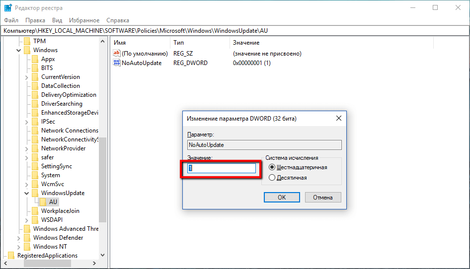

Как отключить автоматическое обновление с помощью реестра на Windows Server 2019
- Нажмите сочетание клавиш Windows + R, чтобы открыть окно команды «Выполнить»
- Введите regedit и нажмите OK, чтобы открыть редактор реестра.
- Перейдите по следующему пути: HKEY_LOCAL_MACHINE\SOFTWARE\Policies\Microsoft\Windows
- Кликните правой кнопкой мыши по разделу Windows и выберите Создать > Раздел.
- Назовите новый раздел WindowsUpdate и нажмите Enter.
- Кликните правой кнопкой мыши по созданному разделу WindowsUpdate и выберите Создать > Раздел.
- Назовите новый раздел AU и нажмите Enter.
- Кликните правой кнопкой мыши по созданному разделу AU и выберите Создать > Параметр DWORD (32 бита).
- Назовите новый параметр NoAutoUpdate и нажмите Enter.
- Дважды кликните по созданному параметру и поменяйте значение с 0 на 1.
- Нажмите кнопку OK.

В любой момент вы можете откатить изменения, используя ту же последовательность действий, но на шаге 4 нужно удалить раздел WindowsUpdate, используя меню правой кнопки мыши. Затем перезагрузите устройство, чтобы применить изменения